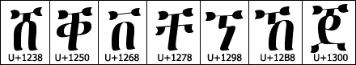
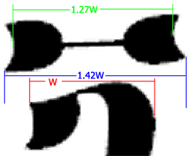
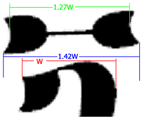
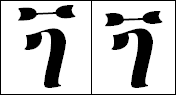
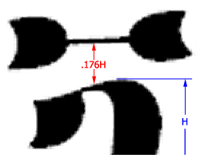
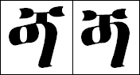
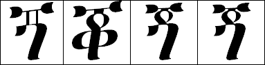
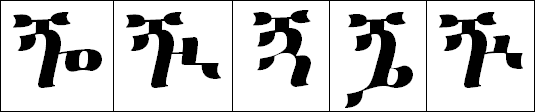
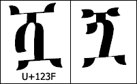

Blin Typeface Design for the "Ng" Syllables
- Authors:
- Tekie Alibekit (Blin Language and Culture Association in Norway)
- Daniel Yacob (Ge'ez Frontier Foundation)
Abstract
The Ethiopic character set was introduced into ISO 10646 on 15/10/98 as Ammendment 10
and became a part of the Unicode 3.0 standard in 20000. The reference documents for the
Agaw-Blin letter symbols present glyphs based on the Ethiopic typewriter. These glyphs were
later refined following the
typeface design of Ethiopia's National Computer and Information Center's "Agaw" font for
the Agaw school system. This note presents further refinements to the standard typeface
for the seven Agaw-Blin letters in the Basic Ethiopic range of the above mentioned standards
as well as for five additional letters proposed for an Extended Ethiopic range and required
in Agaw-Blin orthography.
Table of Contents
0. Introduction
Agaw (aka "Agew") and Blin (aka "Bilin", "Bilien") speakers reside in present day Ethiopia
and Eritrea respectively with a collective population of 630,000-650,000. Both groups also
have significant diaspora populations. The languages of the two groups are closely related
and share the same phoneme inventory and orthogrpahic requirements. Typeface preferences
may however differ between the two parties. While there is some indication for this
(discussed later) there is not a strong aversion by one party to the typeface preference
of the other.
This note details an idealized design for a Blin typeface applying an Ethiopic font
identical to the font of the Unicode code charts for Ethiopic. Differences between Blin
and what is known about Agaw preferences will be noted as they occur but have not been
confirmed with representatives of the Agaw community.
1. Design of Basic Blin
The Blin syllables in ŋ (or "ng") found in the "Basic Ethiopic Range" of Unicode
(U+1200 - U+137C) are derived from the classic Ge'ez syllables
in "g" with the addition of the "Ethiopic macron" symbol. Our derivation
of the Blin syllables necessarily begins by identifying the Ge'ez "g"
syllables:

As a convenience we may borrow the macron from another member of the
Ethiopic syllabary to serve as a starting point for our "ng" macron
design. We find the following series available:

The macron above U+1298 is chosen in part because the
letter is phonemically related to "ng" but more so because the glyph
is relatively horizontal which is a desireable trait. Applying the
U+1298 macron it to U+1308 it is immediately
evident that its width is excessive. We shorten the width, carefully
maintaining the angle of the glyph from the horizontal, until the
width of the macron is 1.42 the width of the U+1308.
 

Next we shorten the left and right side "flares" (aka "buttercups",
"butterfly wings") at
the end of the macron. The height of the flares is scaled to 80% of
the original where the flares appear more natural for "ng". The aspect
ratio of the flares, 1.40, is greater than the norm for macrons in the
Ethiopic set but is in keeping with style in use since 1882 (Reinsch).

The position of the macron above U+1308 is adjusted to
the aesthetically correct position of 17.62% the height of U+1308
measured at the middle of the neck.

It is essential that the macron be joined to the body of U+1308
base. The early Unicode charts for Ethiopic presented the "ng" family with
floating macrons. This style of rendering is consider acceptable only from
the Ethiopic typewriter which must use a separate key for the macron. Hand
written practices of both the Agaw and Blin will join the macron to the head
of the "g" syllable it modifies. Computer typography should present this
expected form of the glyph.
The "neck" that joins the macron to the head of the base glyph should have
the same thickness as either U+1238 and U+1300 (which
are generally identical) and borrow the angular properties of U+1238.
In this demonstration the neck of U+1238 has been simply grafted
onto the top of U+1308 with the height adjusted to meet the base
of the macron. Note that left side of the neck joins the head of
U+1308 where the left flare ends and the right side joined the
head at the apex of the top curve (coincidental). The neck then spans over
the inner arch of the U+1308 body, an effect that is considered
desireable.

The macron of U+1318 may now be grafted onto U+1309 - U+130C to form our glyphs for U+1319 - U+131C:

1.1 Design of the Sixth Form
The rules given for grafting the neck onto the "g" series base must be
adjusted for U+130D and U+130D which present special
cases. In the first, U+130D, the left most side ends not with
the expected flare but with a loop. In hand written practices the loop is
written with a counter clockwise stroke. This stroke will continue upward,
thru the top of the body, to form the macron (Reinsch). It remains desirable
in modern typography that right side of the loop and the joining neck appear
as a single continuous smooth stroke:

1.2 Design of the Seventh Form
The seventh form of the "ng" family is again a special case where
the issue of the neck needs special consideration. The reference font
from found in the Unicode tables presents U+131E (or "ngo)
as shown
in the first frame in the table below. The vertical lines and almost
box like area presents an exception to the norms of typeface style in
the font and to Ethiopic calligraphic styles in general.

The Blin preffernce is to use a more natural loop in place of the
box like hollowed neck. U+1256 (in the 2nd frame above) offers the best
starting point for an acceptable loop to apply to the "ngo" form. Grafting
the loop portion of U+1256 onto the U+130E base
we first scale the loop uniformly by 80%. The uniform scaling is important
to preserve the shape of the strokes and inner white area of the loop.
In the third frame of our table we see the scaled loop grafted onto
U+1256 with the standard
"ng" macron grafted on top. As a consequence of the scaling the right side
of the loop now appears too thin. The last frame shows the loop with the
outer most ride side loop displaced slightly to enhance the thickness.
2. Design of Extended Blin
Both Agaw and Blin orthography rely on five labiovelar forms of the
"ng" syllables
(
ŋʷə,
ŋʷi,
ŋʷa,
ŋʷe and
ŋʷ
).
These five labialised forms have not yet been introduced into ISO-10646 /
Unicode but are included in proposals for an "Extended Ethiopic" range.
Repeating the process for the design of the basic Blin syllables we start
by identifying the labialised forms in "ge" (U+1310 - U+1315)) that we will build upon:

Again we may simply graft on the macron that we've designed for the
basic Blin syllables:

This approach is satisfactory for all but the third labialized form, "ngwa".
During the design of the Ethiopian NCIC "Agaw" font the Agaw representatives
were very specific in their request that the "ngwa" glyph follow the stylized
norms of other "straight legged" labializations. The Blin preference regarding "ngwa" concurs with the Agaw. Comparison to U+123F
is shown below as an example:

Note however that change in macron style (the bottom side is flat and "wingless") that occurs in many labializations and demonstrated with U+123F should not be applied to labialised forms of "ng".
3. Recomendations
Appendix A. References
- Everson???
- ISO 10646 Ammendment 10 http://www.evertype.com/standards/iso10646/pdf/amd10-ethiopic.pdf
- Unicode
- Ethiopic Code Chart in Unicode: http://www.unicode.org/charts/PDF/U1200.pdf
- Giuseppe Sappeto
- Viaggio missione cattolica frai Mensa, i Bogos e gli Habab, Roma, con un brevo dizionario Bileno, 1857
- Werner Munzinger
- Die deutsche Expedition in Ostafrika, 1861-64
- D'Abbadie, Antonie
- Sur le droit Bilen, Parigi, Paris, 1866
- Reinisch, Leo
- Die Bilin-Sprache in Nordos Afrika, (Bilin Grammar), Vienna, 1882
- Reinisch, Leo
- wengel marqos: Gospel of Mark in Blin or Bogos Language, 1882
- Reinisch, Leo
- Texte Der Bilin-Sprache, (Blin Stories, narratives etc.). Leipzig, 1883
- Reinisch, Leo
- Worterbuch der Bilin Sprache, (A Dictionary), Vienna, 1887
- Conti Rossini
- Racconte e Canti bileni, Actes du XIVe Internazionale des Orient. Rome, 1907
- Cappomaza, Uliano
- Un Testo Bileno, Rivista Degli Studi Oriental. vol. 4-1911-12, 1911
- Fr. Wolde-Yohannes Habtemariam
- Awi mehedxwna, (Who Created Us?, a catechism), 1939
- Palmer, F. R.
- The Verb in Bilin, Bulletin of the School of Oriental and African Studies, London, 1957
- Palmer, F. R.
- The Noun in Bilin, Bulletin of the School of Oriental and African Studies, London, 1958
- Palmer, F. R.
- An Outline of Bilin Phonology, Atti del convegno internazilanle diostdui etiopici. Roma: academiia Nazionale dei Lincei, 1960
- Palmer, F. R.
- Bilin "to be" and "to have", African Language Studies, Vol. 6, pp. 101-111, 1965
- Palmer, F. R.
- Word Class in Bilin, International Review of General Linguistics, Lingua vol.17, Amsterdam, 1967
- Micheal Ghaber*
- The Blin of Bogos, A Thesis Project submitted to the History Department of the then Haile Selassie I University in Addis Ababa, Printed in Iraq, 1971
- Zaborsky, Andrej
- Consonant apophomy and consonant alteration in Bilin, Afroasiatic Linguistics vol. 3, pt. 6, 1976
- Kiflemariam Fadega, Abba
- werena jar musiKw, (A Cathechism and Paryers in Blin). Stencil, Unpublished, 1976
- Kiflemariam Fadega, Abba
- Qdase blind, (The Holy Mass in Blin), Stencil, Unpublished, 1977
- Kiflemariam Fadega, Abba
- The Blin Language: A Long Struggle for Survival, A Paper Presented in the 8th International Conference of Ethiopian Studies, Addis Abba University. November 26-30. pp. 37, 1984
- Mekonnen Amanuel*
- Melamedi QanQa Blin, Blin Primary. Asmara. Stencil, Unpublished, 1984
- Kiflemariam Hamde*
- The Origin and Development of Blin, Blin Language Project. Institute of African Studies. Asmara University. Unpublished Research Paper. pp 100, 1986
- Kiflemariam Hamde*
- The Role of Folk Poems in Expressing Economic Problems, a paper presented in Blin Language and Culture Seminar, June 5 1986, Asmara University, Eritrea, 1986
- Kiflemariam Hamde*
- Analysis of some Blin Proverbs, Ethiopian Journal of African Studies 5(2): 62-68, 1989
- Kidane Yebio, Abba*
- Fidel Shibisena Blinid (Blin for Beginners), Unpublished, 1989
- Kiflemariam Hamde
- Traditional religious customs in Blin society: The 'Candle Meal' and the 'Covenant', Adventist Regnum Tuum 51(1): 18-23 Asmara,, 1990
- Goitom Kuflom*
- blin haleget, The Blin Alphabet. Switzerland. Unpublished Research Paper. pp 70, 1991
- Kidane Yebio, Abba, et.al
- Qdase blindi geezdisi. Hadisd delemaKw, Stencil, Unpublished, 1992
- Tekie Alibekit*
- Blina ktabetdi gbra gabuxwdi, "Blin Language. Introductory phonetics and Grammar. 1st edition", Oslo. pp 116, ISBN 82-992623-0-5, 1992
- Tekle Ghiorghis Yohannes Aftay*
- Blinna Gabba Gug, : Blin grammar in Blin Language. Uppsala: Nyna Tryckeri. pp. 187, 1992
- Blin Langauge Research Group (Edited by Kiflemariam Hamde* and Paulos Zeremariam*)
- Blina qolata end'ba, Blin Dictionary, with English Translations . Uppsala: Nyna Tryckeri. pp. 390, ISBN 91-630-1297-9, 1992
- Bogos Goitom*
- Enkeli, Love Poems. Uppsala: Nyna Tryckeri, 1992
- Yacob Zeru, Abba
- wengielynadera ysusruKw., The Gospel in Blin, 1993
- Tekie Alibekit*
- A summary of Blin Phonetics and Grammatical Terms, Unpublished, Oslo, 1993
- Tekie Alibekit*
- Blina Dgim H'yaytu, Blin Fables, Unpublished, Oslo, 1993
- Tekie Alibekit*, Kiflemariam Hamde*, Fessehazion Zemicael*, and Abba Asfaha Kidanemariam*
- Blina gaba TefHat, Standardisation of Some Blin Writing (1994), A working Paper. pp 8, 1994
- Fessahatzion Zemicael*
- Shib blin'd. Numerals in Blin for Children., Stockholm, 1994
- Tekie Alibekit*
- Blina Golia, Blin Folk Dance Songs, Unpublished, 1995
- Kiflemariam Hamde*
- Recent Developments in Blin Writing, TimSa' Mengst'ke, An article describing the situation of Blin writing since 1970s, published in Adventist Regnum Tuum, A Six. monthly Review published by the Capuchin Students, Asmara, Nr Vol. 64, No 2: 80-84, 1996
- Kiflemariam Hamde*
- The role of language in societal development: Culture, Language and Society, A paper presented at the First National Conference on Eritrean Languages, Ministry of Education, and EPFDJ, August 16-18, Asmara, 1996
- The Committee for Developing Blin Lanaguage and Culture in Keren
- The Committee for Developing Blin Lanaguage and Culture in Keren, 1997
- Kiflemariam Hamde*
- Blin Language Lessons for DEHAI, A Network for Eritreans: http://web.archive.org/web/20010820200320/http://www.primenet.com/~ephrem2/languages/blin/, 1997
- Lamberti, M. & L. Tonelli
- Some Phonological and Morphological Aspects of Bilin, Afroasiatic Neapolitana. 6, 81-99, 1997
- Ministry of Education
- Blina Gab Linger Me-ebed, Blin for 2nd Grade. Publishing Unit of the Department of General Education, 1998
- Tekie Alibekit
- Blina Qolata End'ba, A revised version of Leo Reinisch's 1987 Blin Dictionary, Unpublished, 1999
- Kidane Yebio, Abba, et.al
- srAt awsaIniKwdi arb sqletuKdi, (The Ceremony of Hosanna and Long Friday), 2000
- Kidane Yebio, Abba, et.al
- ynaderes shiwnin, (A Blin Prayer Book), 2000
- Kiflemariam Hamde*
- Being and Becoming an Eritrean In Sweden: The Case of Blin Language and Culture Association in Stockholm, A paper submitted for a PhD Course on Sociolinguistics, Afro Asiatic Department, Uppsala University, December, 2000
- Kiflemariam Hamde*
- Lets Discuss Blin Poems and their role in Blin Society., A Paper read at the 10th anniversary of the Blin Language and Culture Association in Sweden, Stockholm, December 28, 2000
- Kiflemariam Hamde*
- How is Blin Written?, A Paper presented at the First Workshop on Blin Language, organised by the Blin Language and Culture Association in Sweden, Stockholm, February 10, 2001
- Tekie Alibekit*
- The Velar Nasal Stop "ng" in Blin and its Original Writing In Ge'ez, A Supplimentary paper for standardization of Blin Writing, Oslo, 2001
- Department of General Education,
- Blina Gab Selfa Mé-ébéd (Blin Language for 1st Grade), Ministry of Education, Asmara, 1997
- Department of General Education
- Blina Gab Sikhwer Mé-ébéd (Blin Language for 3rd Grade), Ministry of Education, Asmara, 1999
- Marcello Lamberti
- The Expression of Prepositional Phrases in Blin,
New Data and New Methods in Afroasiatic Linguistics-Robert Hetzron in Memoriam, Edited by Anderzej Zobarski 2001 Wiesbaden
- Abbebe Kifleyesus
- Blin: Speaker Status Strength and Weakness, Africa- Rivista trimestrale di studi e documentazione dell' Istituto italiano per l'Africa e lOrientale March 2001
- Paul D. Fallon, Howard University
- Some Phonological Processes in Bilin,
Proceedings of the Berkeley Linguistics
Society Special Session on Afro-Asiatic Linguistics, Berkeley, CA. 2001
- Marcello Lamberti & Livia Tonelli
- The Noun System of Bilin, Ethiopia in Broader Perspective vol. 1-
papers of the XIIIth International Conference of Ethiopian Studies, Kyoto: Shokado Book Sellers ISBN: 4-87974-976-1 C3039 2001? Kiyoto 12-17 Dec. 1997
Appendix B. Additional Typeface Examples
Modified: 2002-09-24T15:27:48+03:00